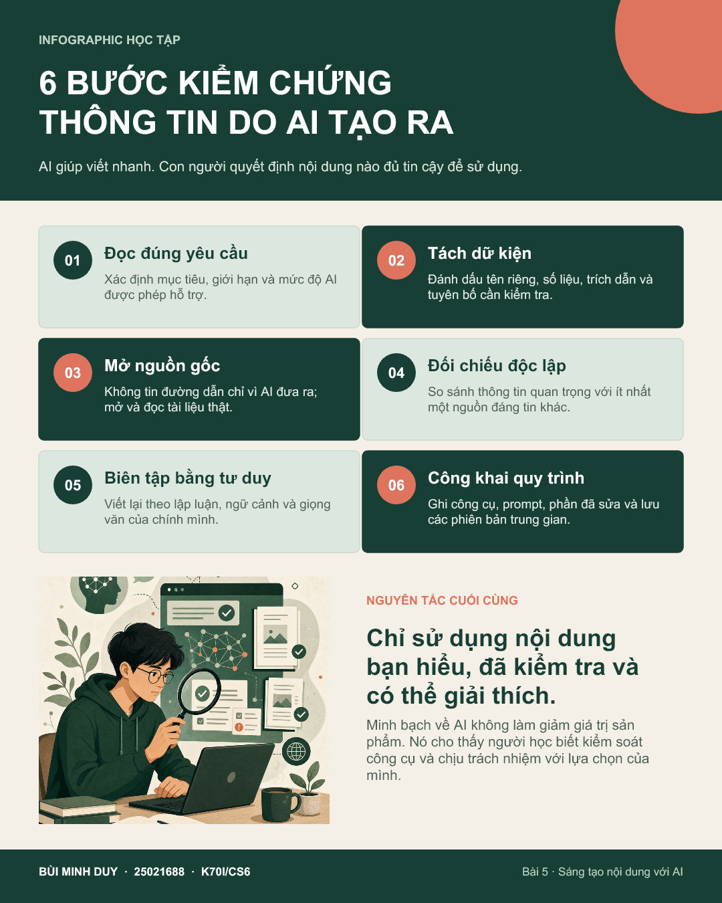
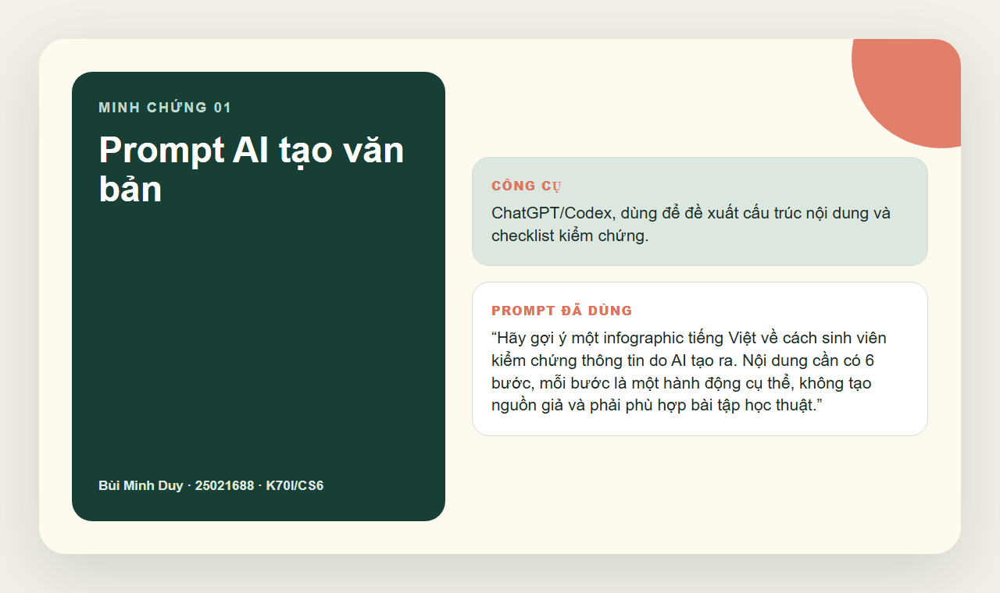
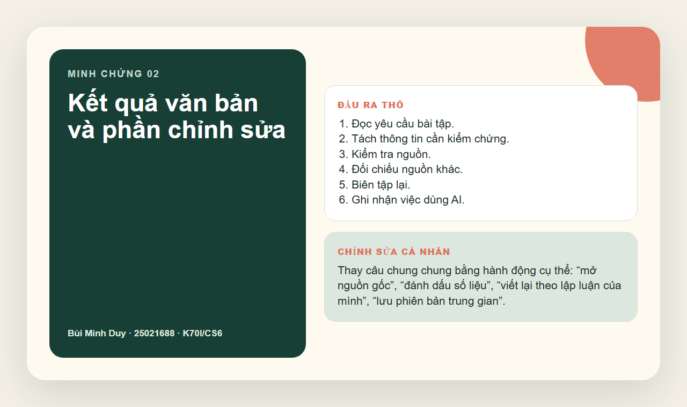
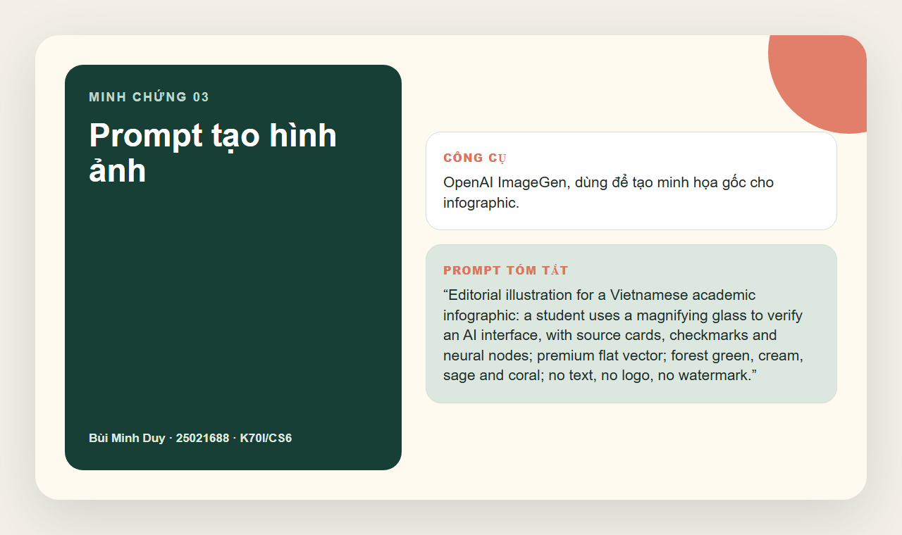
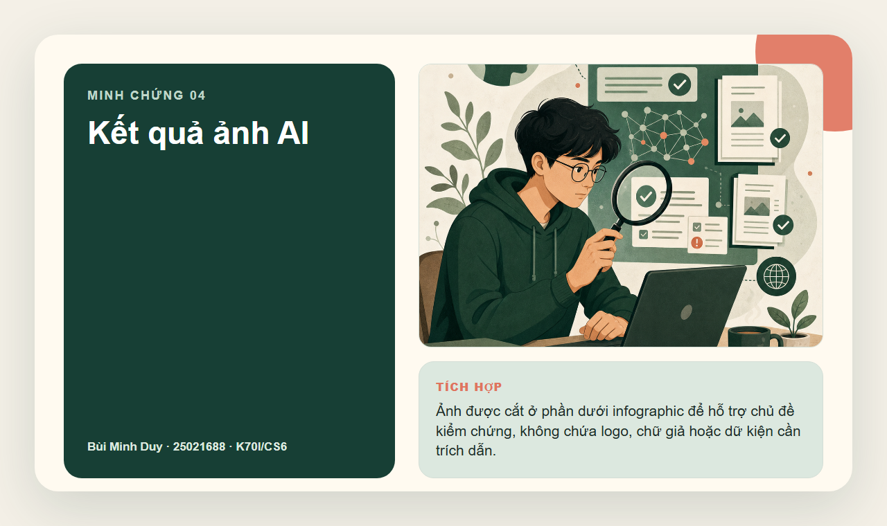
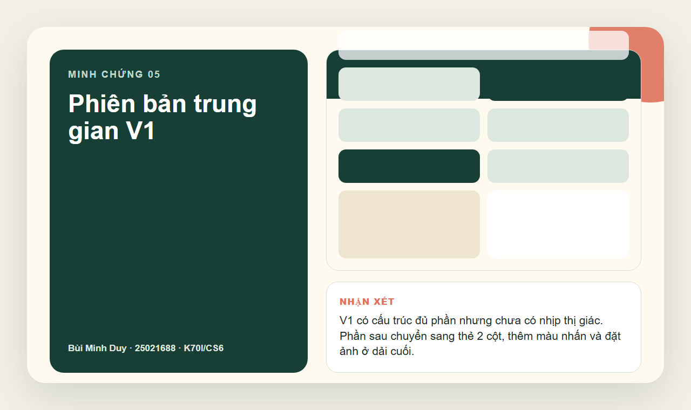
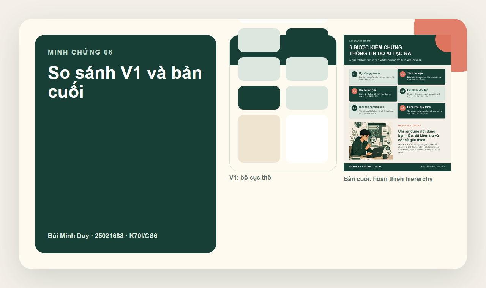

AI tạo văn bản
ChatGPT/Codex gợi ý cấu trúc, checklist và bản nháp phân tích.
Bài tập 5 · Portfolio cá nhân
Dự án infographic “6 bước kiểm chứng thông tin do AI tạo ra”, ghi lại prompt, kết quả, chỉnh sửa, phiên bản trung gian và phân tích vai trò của AI trong quy trình sáng tạo.
01 / Tổng quan
Sản phẩm bám rubric Bài 5: dùng ít nhất 3 công cụ AI, có 5+ ảnh minh chứng, có phiên bản trung gian và phân tích đạo đức.
ChatGPT/Codex gợi ý cấu trúc, checklist và bản nháp phân tích.
OpenAI ImageGen tạo minh họa sinh viên kiểm chứng giao diện AI.
Codex + PowerPoint artifact-tool dựng poster, xuất PNG/PPTX.
PDF/Word có quy trình, so sánh công cụ, vai trò AI và vấn đề đạo đức.
02 / Sản phẩm cuối cùng

03 / Nhật ký quy trình
“Hãy gợi ý một infographic tiếng Việt về cách sinh viên kiểm chứng thông tin do AI tạo ra. Nội dung cần có 6 bước, mỗi bước là một hành động cụ thể, không tạo nguồn giả và phải phù hợp bài tập học thuật.”






04 / So sánh công cụ
05 / Vai trò AI và đạo đức
Ghi rõ công cụ, prompt, phần AI hỗ trợ và cách chỉnh sửa. Không tạo ảnh chụp màn hình giả của công cụ chưa dùng.
Không xem đầu ra AI là nguồn chứng cứ. Nội dung cuối phải là phần có thể giải thích lại bằng lập luận của mình.
AI giúp tăng tốc bản nháp; người học quyết định chủ đề, chọn lọc nội dung, sắp xếp thông điệp và chịu trách nhiệm bản cuối.
07 / Liêm chính học thuật
Nội dung báo cáo được viết mới cho dự án này dựa trên rubric Bài 5 và nhật ký quy trình ngày 07/06/2026. AI được dùng để hỗ trợ tạo nháp, ảnh và bố cục; không dùng để bịa nguồn hoặc thay thế trách nhiệm học thuật của người nộp bài.
Phần kiểm tra trùng lặp ở mức thủ công: rà các cụm câu đại diện và không phát hiện dấu hiệu sao chép nguyên văn từ nguồn công khai. Đây không phải báo cáo Turnitin và không thể bảo đảm tuyệt đối 0%.
{kind=link}